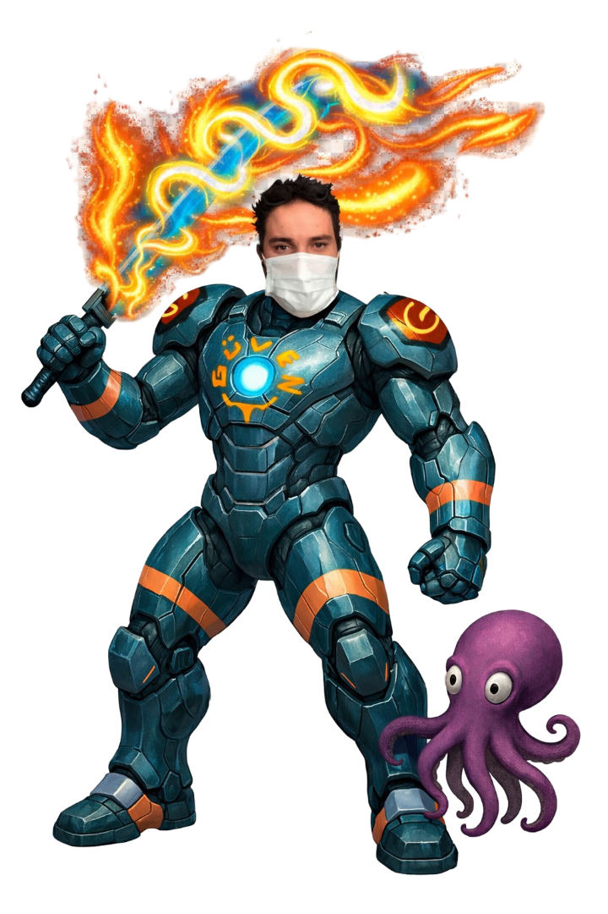

Engineer & Multidisciplinary Digital Artist
Güven
ÇALIŞKAN
Engineer
I work across engineering, software, project management and visual art — combining analytical thinking with a strong creative practice.
Multidisciplinary engineer & artist